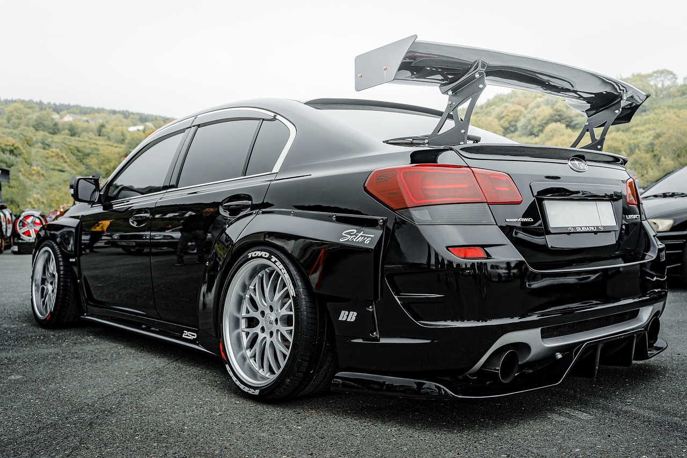

Winter Salt Revival
2018 Subaru Outback · Mississauga
Before

After

- Steam extraction & salt neutralizing treatment
- Ozone refresh for lingering odours
- Graphene fabric guard for future protection